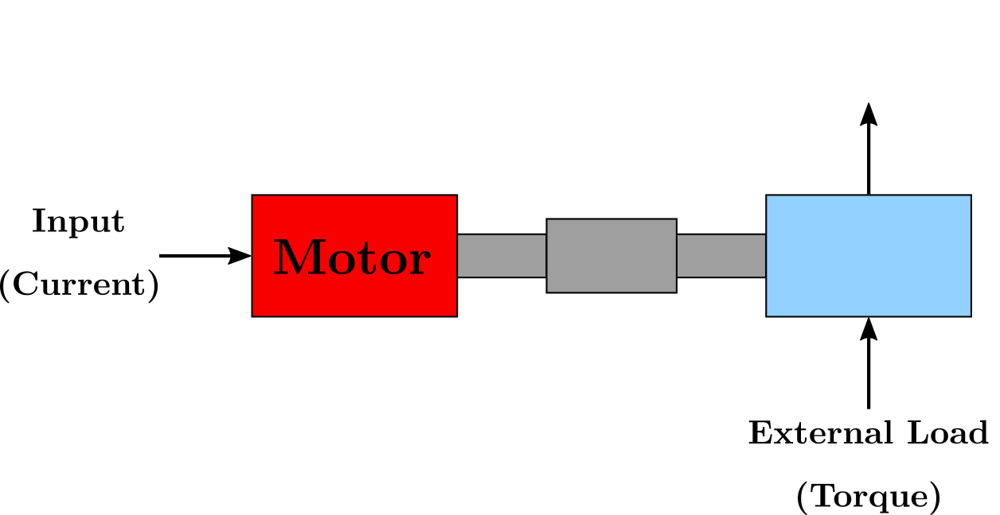
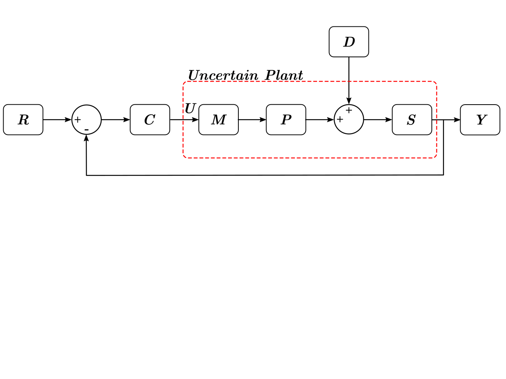

Bayesian Edge Analytics of Manufacturing Process and Health Status in an IoT Framework
October 29th 2019
Daniel NewmanDepartment of Mechanical Engineering
Georia Institute of Technology
danielnewman@gatech.edu
Motivation
Motivation
Central Thesis
Outline
IoT Frameworks
Background
Background: Wireless Sensor Devices
Background: Machine Monitoring
Research Opportunities
Proposed Activities
Work Accomplished
Genos X Coordinate Model
$$
\ddot{x} = \frac{1}{m} \left ( -F_g - \beta_x \dot{x} + B_{x} u_{x} + F_{x} \right )
$$
$m$ - Mass of the turret
$F_{g}$ - Force induced by gravity
$\beta_{x}$ - Drag coefficient
$B_{x}$ - Converts input (Current) to Force
$u_{x}$ - Current input to the spindle motor
$F_{x}$ - Cutting force in the radial direction
Genos Z Coordinate Model
$$
\ddot{z} = \frac{1}{m} \left ( -\beta_z \dot{z} + B_{z} u_{z} + F_{z} \right )
$$
$m$ - Mass of the turret
$\beta_{z}$ - Drag coefficient
$B_{z}$ - Converts input (Current) to Force
$u_{z}$ - Current input to the spindle motor
$F_{z}$ - Cutting force in the axial direction
System Comparison

System Block Diagram

- $R$ - Reference given by user input
- $C$ - Controller which gives known output $U$
- $M,P,S$ - Unknown Plant (Motor, Pulley, Spindle)
- $D$ - External disturbance due to cutting
- $Y$ - Measured Output (Spindle Speed)